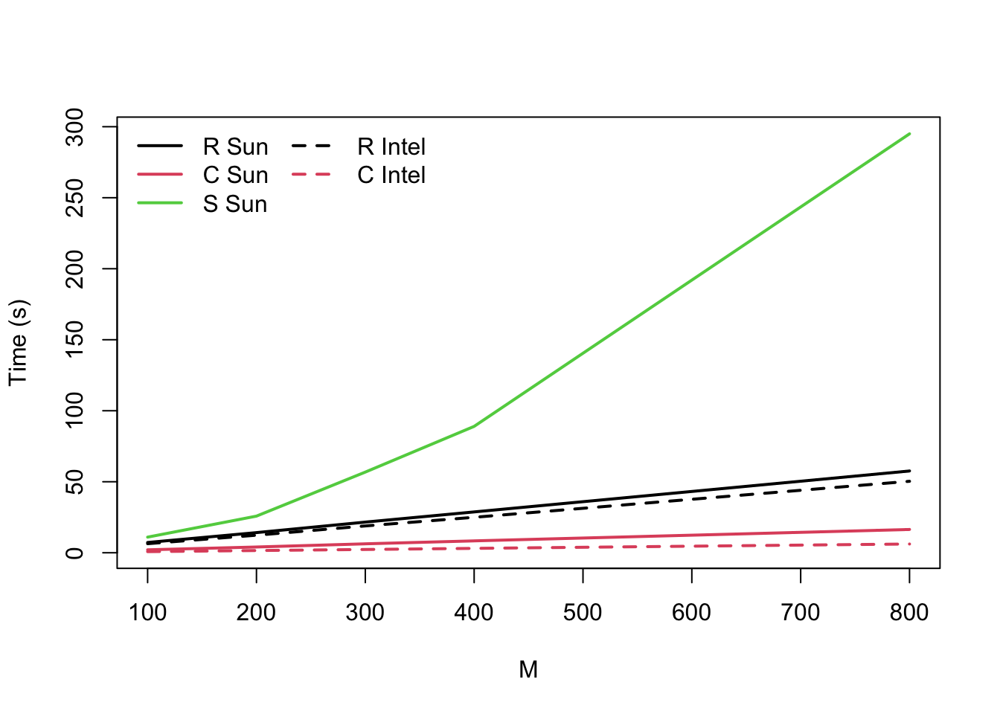

Thanks to Luis Apiolaza on Mastodon, I was looking at some old R mailing list messages. I found one comparing the speed of R and S (and S compiled1 to C) for a loop-intensive program
LMS <- function(M, N)
{
### Pre-allocate result and filter. ###
R <- matrix(0,nrow=M, ncol=5)
W <- rep(0,5)
for (i in 1:M) {
### Simulate MA(1) ###
Z <- rnorm(N+1)
X <- Z[2:(N+1)] + 0.5 * Z[1:N]
### Perform LMS ###
for (j in 5:N) {
U <- X[j:(j-4)]
E <- Z[j+1] - sum(W * U)
W <- W + 0.1* E * U
}
### Save final result ###
R[i,] <- W
}
return(R)
}This program was an example for the compiler, so it was chosen to be inefficient when interpreted. Speed comparisons for a Sparc Ultra 1 (expensive) and a Linux computer with a Pentium Pro 150 (relatively cheap) were (for N=100)
Ultra Intel
M R C S R C
100 7.24 2.08 11 6.38 0.79
200 14.19 4.06 25.8 12.36 1.56
300 21.59 6.3 56.8 18.89 2.31
400 28.76 8.37 89 24.97 3.09
800 57.62 16.42 295 50.33 6.16Let’s have a look at these in a graph
d<-read.table(text="M R_Sun C_Sun S_Sun R_Intel C_Intel
100 7.24 2.08 11 6.38 0.79
200 14.19 4.06 25.8 12.36 1.56
300 21.59 6.3 56.8 18.89 2.31
400 28.76 8.37 89 24.97 3.09
800 57.62 16.42 295 50.33 6.16
", header=TRUE)
matplot(d[,1],d[,-1],type="l", lwd=2,col=c(1:3,1:2),
lty=c(1,1,1,2,2),xlab="M",ylab="Time (s)"
)
legend("topleft",lty=c(1,1,1,2,2),col=c(1:3,1:2),lwd=2,bty="n",
legend=c("R Sun","C Sun","S Sun","R Intel","C Intel"),ncol=2)
At the time, it was interesting that the Linux system slightly outperformed the much more expensive Sun workstation. More interesting, though, was the performance of S, which is slower-than-linear and potentially quadratic in M. This is part of the reason people think loops are slow in R2
Today, in R on an Apple M1, I get (medians from microbenchmark)
M time
100 0.004
200 0.009
300 0.013
400 0.017
800 0.035
8000 0.352That’s impressive, but it’s actually less improvement than you’d expect from 26 years of Moore’s Law (13 doublings in speed, so a factor of 1/8192). Part of this is that R is still very single-threaded, and part is that hardware performance has fallen behind Moore’s Law projections recently. The code may also not be making the best use of caches on modern computers.